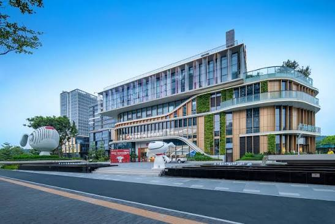

Global Youth Innovation Salon Convenes in Chengdu: Multilateral Leaders and Youth Tackle Digital Inclusion and Industrial Transformation
On 14 October 2026, the Global Youth Innovation Salon (Chengdu)—themed "From the Global South to the Global North: How Can Digital Inclusion Advance Youth Development?"—will officially convene in Chengdu, China. Hosted by NBD Think Tank and supported by the Global Youth Development Alliance (GYDA), Indonesia's Investment Promotion Board (BKPM), the Artificial Intelligence Association of Thailand (AIAT), the Arab ICT Organization (AICTO), the United Nations Project Office on Governance (UNPOG, under UN DESA), and the Qatar Foundation's Earthna center, the high-level dialogue bridges global multilateral agendas with local industrial practice. Connecting morning field investigations across smart logistics, industrial UAVs, and zero-carbon factories with an afternoon "question-funnel" multilateral roundtable, the salon convenes senior officials across the United Nations system, ASEAN, the Arab world, and the Gulf alongside 100 emerging youth stakeholders to turn the United Nations Global Digital Compact commitments into localized economic and youth development solutions.
Location
Chengdu, China
Date
October 14, 2026
Frontline Industrial Investigation: Hard Power and Green Foundations in an Inland Metropolis

The salon's narrative begins on the frontline of Chengdu's industrial ecosystem, providing international delegates with tangible empirical evidence of how digital inclusion and technological capability take root in an inland city.
During the morning field mission, international delegations will inspect JD's Asia No.1 smart logistics hub to observe automated supply chains, unmanned warehousing, and intelligent delivery infrastructure. The mission continues to Zongheng Pengfei to examine industrial UAV development and the commercial deployment of the low-altitude economy, followed by an in-depth visit to Tongwei's zero-carbon production base to witness how photovoltaic clean energy manufacturing provides the green foundation for high-density computing power and digital infrastructure. These visits ground the afternoon deliberations in concrete industrial practice, demonstrating how an inland metropolis integrates physical hardware, green energy, and advanced manufacturing.
Multilateral Synergy: Connecting Policy, Governance, and Investment Across Global Tracks
Transitioning from factory floors to multilateral policymaking, the afternoon session convenes a specialized dialogue on emerging market opportunities for digital enterprises, culminating in the centerpiece multilateral roundtable. Rather than presenting isolated speeches, participating international leaders synthesize their perspectives across regional policy coordination, public governance, and international investment corridors.
H.E. Eng. Mohamed Ben Amor, Secretary-General of AICTO, and Asst. Prof. Dr. Nongnuch Ketui, Vice President of AIAT, examine digital infrastructure integration and ethical artificial intelligence (AI) cooperation across 22 Arab member states, aligning cross-border trade corridors with industrial workforce standards under Thailand 4.0 and the Eastern Economic Corridor (EEC). In public administration, Jack Huang, Advisor to the United Nations Office of Information and Communications Technology (UN OICT), alongside Carolit Grace V. Salvacion from UNPOG, address the operationalization of international consensus on computing capacity and public-governance innovation, directly benchmarking global Sustainable Development Goals (SDGs) against Chengdu's municipal experience in park city development and the "Tianfu Citizen Cloud" digital public service platform.
Complementing the policy and governance tracks, Cahyo Purnomo, Director of Regional Investment Promotion at Indonesia's BKPM, together with Talha Mirza, Programme Manager at Earthna, provide actionable routes for enterprise globalization, detailing Indonesia's industrial downstreaming policies and online single submission (OSS) system alongside the Gulf region's green energy transition.
Youth as Question-Setters: Reversing the Multilateral Narrative
At the heart of the Chengdu stop is the "Youth Multiplier Model" spearheaded by Allan Han, Executive Director of GYDA. The salon structurally upends traditional top-down conferences by transforming young participants from passive recipients of multilateral agendas into active question-setters.
Opening with the overarching question—"Why do young people choose a city in the digital-economy era?"—the session channels dialogue through six pointed global inquiries before ceding the floor entirely to 100 on-site youth representatives. Comprising international students from Chengdu universities, generative AI creators, cross-border e-commerce pioneers, and young engineers in computing and low-altitude systems, these frontline stakeholders will directly challenge UN officials and institutional leaders with real-world bottlenecks, establishing a direct, bilateral problem-solving mechanism between global policymakers and the rising generation.